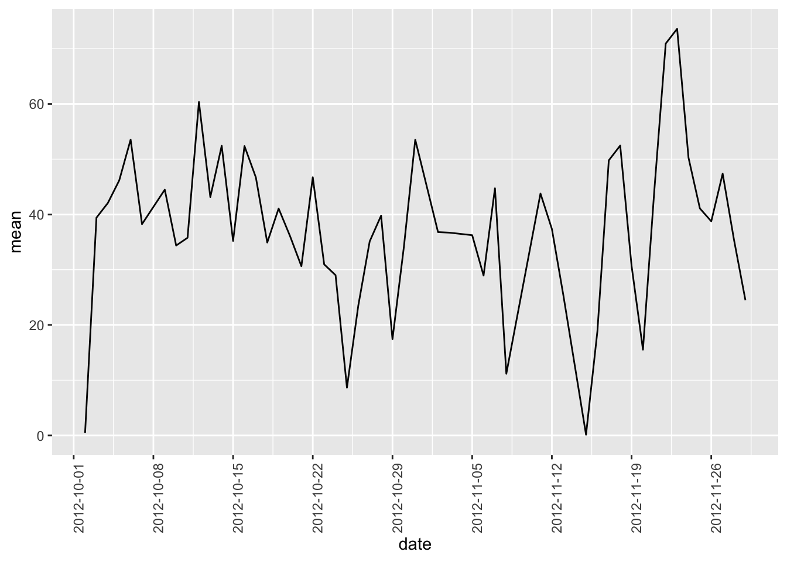
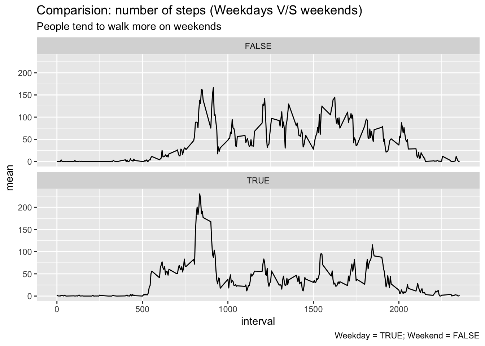

Reproducible research assignment
David García Sabaté
24/4/2019
knitr::opts_chunk$set(echo = TRUE)library(tidyverse)
library(lubridate)Programming assignment 1: reproducible research
1. Code for reading in the dataset and/or processing the data
Download the “activity.csv” dataset
zipUrl <- "https://d396qusza40orc.cloudfront.net/repdata%2Fdata%2Factivity.zip"
zipFile <- "repdata_data_activity.zip"
download.file(zipUrl, zipFile, mode = "wb")
unzip(zipFile)Now we have tib_observations tibble object, and see a sample of 10 observations
dataframe <- read.csv("activity.csv")
tib_observations <- as_tibble(dataframe)
tib_observations$date <- ymd(tib_observations$date)
head(tib_observations, 10)## # A tibble: 10 x 3
## steps date interval
## <int> <date> <int>
## 1 NA 2012-10-01 0
## 2 NA 2012-10-01 5
## 3 NA 2012-10-01 10
## 4 NA 2012-10-01 15
## 5 NA 2012-10-01 20
## 6 NA 2012-10-01 25
## 7 NA 2012-10-01 30
## 8 NA 2012-10-01 35
## 9 NA 2012-10-01 40
## 10 NA 2012-10-01 452. Histogram of the total number of steps taken each day
sum_steps <- tib_observations %>%
group_by(date) %>%
summarize(
steps = sum(steps)
)
ggplot(sum_steps, aes(date, steps)) +
geom_bar(stat = "identity") +
theme(axis.text.x = element_text(angle = 90))## Warning: Removed 8 rows containing missing values (position_stack).
3. Mean and median number of steps taken each day
We remove de NA values since we assume that there are no observations in that period of time.
mean_median_steps <- tib_observations %>%
filter(!is.na(steps)) %>%
group_by(date) %>%
summarize(
mean = mean(steps, na.rm = T),
median = median(steps, na.rm = T)
)
mean_median_steps## # A tibble: 53 x 3
## date mean median
## <date> <dbl> <dbl>
## 1 2012-10-02 0.438 0
## 2 2012-10-03 39.4 0
## 3 2012-10-04 42.1 0
## 4 2012-10-05 46.2 0
## 5 2012-10-06 53.5 0
## 6 2012-10-07 38.2 0
## 7 2012-10-09 44.5 0
## 8 2012-10-10 34.4 0
## 9 2012-10-11 35.8 0
## 10 2012-10-12 60.4 0
## # … with 43 more rows4. Time series plot of the average number of steps taken
ggplot(mean_median_steps, aes(date, mean)) +
geom_line() +
scale_x_date(date_breaks = "1 week") +
theme(axis.text.x = element_text(angle = 90))
5. The 5-minute interval that, on average, contains the maximum number of steps
five_minute <- tib_observations %>%
filter(!is.na(steps)) %>%
group_by(interval) %>%
summarize(
average = mean(steps)
) %>%
arrange(desc(average))
head(five_minute, 1)## # A tibble: 1 x 2
## interval average
## <int> <dbl>
## 1 835 206.The interval that, on average, contains de maximum number of steps is 8:35
6. Code to describe and show a strategy for imputing missing data
Total number of missing values:
tib_obsNA <- tib_observations %>%
filter(is.na(steps))
(count(tib_obsNA) * 100) / count(tib_observations)## n
## 1 13.11475Total NAs are 2304 observations. They represent 13% of the whole sample.
Strategy for filling in all of the missing values in the dataset is using the mean for that 5-minute interval.
#calculate means for every period in a separate table
tib_media_periodos <- tib_observations %>%
group_by(interval) %>%
summarize(
mean = mean(steps, na.rm = T)
)
#join means table with the main table
tib_medias <- left_join(tib_observations, tib_media_periodos)## Joining, by = "interval"tib_medias$mean <- as.integer(tib_medias$mean)
#Replace NA Values
tib_medias$steps[is.na(tib_medias$steps)] <- tib_medias$mean[is.na(tib_medias$steps)]
# Resulting table
tib_filled <- tib_medias %>%
select(-mean)
head(tib_filled,10)## # A tibble: 10 x 3
## steps date interval
## <int> <date> <int>
## 1 1 2012-10-01 0
## 2 0 2012-10-01 5
## 3 0 2012-10-01 10
## 4 0 2012-10-01 15
## 5 0 2012-10-01 20
## 6 2 2012-10-01 25
## 7 0 2012-10-01 30
## 8 0 2012-10-01 35
## 9 0 2012-10-01 40
## 10 1 2012-10-01 457. Histogram of the total number of steps taken each day after missing values are imputed
tib_filled %>%
group_by(date) %>%
summarize(
steps = sum(steps)
)## # A tibble: 61 x 2
## date steps
## <date> <int>
## 1 2012-10-01 10641
## 2 2012-10-02 126
## 3 2012-10-03 11352
## 4 2012-10-04 12116
## 5 2012-10-05 13294
## 6 2012-10-06 15420
## 7 2012-10-07 11015
## 8 2012-10-08 10641
## 9 2012-10-09 12811
## 10 2012-10-10 9900
## # … with 51 more rowsggplot(tib_filled, aes(date, steps)) +
geom_bar(stat = "identity") +
theme(axis.text.x = element_text(angle = 90))
8. Panel plot comparing the average number of steps taken per 5-minute interval across weekdays and weekends
# weekdays -> 2-6, weekends -> 1 or 7
tib_filled_wdays <- tib_filled %>%
mutate(
weekday = wday(date, label = T),
weekday_int = wday(date),
is_weekday = weekday_int %in% c(2:6)
)
tib_filled_wdays_summary <- tib_filled_wdays %>%
group_by(interval, is_weekday) %>%
summarize(
mean = mean(steps)
)
ggplot(data = tib_filled_wdays_summary) +
geom_line(mapping = aes(x = interval, y = mean)) +
facet_wrap(~ is_weekday, nrow = 2, ncol = 1) +
labs(
title = "Comparision: number of steps (Weekdays V/S weekends)",
subtitle = "People tend to walk more on weekends",
caption = "Weekday = TRUE; Weekend = FALSE"
)